Cars & engines
How an engine turns fuel into motion. It's the reason I modelled a V8 one part at a time.
Computer Science & Business · Trinity College Dublin
I'm interested in two things: the patterns hidden in data, and ideas turned into things you can hold. So I work on both sides of the line, software and hardware.
Software ⟷ Hardware
I'm a first-year Computer Science & Business student at Trinity College Dublin, with a strong interest in both software and hardware.
On the software side, I'm drawn to data and the patterns within it, from Python scripting to optimising a trading strategy over thousands of backtests. On the hardware side, I like seeing ideas come to life: taking designs from concept sketches to parametric SolidWorks parts and assemblies, then into hands-on mechanical builds.
Right now I'm co-founding Resonance, a web start-up that rebuilds outdated websites for small businesses.
How an engine turns fuel into motion. It's the reason I modelled a V8 one part at a time.
Price action, backtesting, and the statistics behind whether a strategy actually holds up.
Fixing things by hand: drivetrains, brakes, and rebuilding bikes for people who need them.
Taking a product from concept sketch to parametric model and technical drawing, like the soap dispenser I designed for my Leaving Cert DCG project.
Pick one to open
Seven projects, from an engine and a rocket fin can to an app that reads a pool table and a hackathon build with my team.
Open a tile to maximise it. Each project has its own space: explore it, then minimise it to choose another.
Smaller builds, client work and design projects.
A web start-up I co-founded with a friend. We rebuild outdated websites for small businesses so they’re easier to use and look modern.
Custom timetabling software for Resonance’s first client, VS Driving School, to schedule and manage driving lessons.
A SolidWorks design that turns a standard bicycle into an e-bike, with the motor and battery mounted on a frame someone already owns.
My Leaving Cert DCG project, taken from concept sketches to a parametric model and technical drawings.
On work experience at TCS, my team reimagined food delivery as a drone-based system. I designed the app prototype and user journey in Figma.
Click a role to expand
Contact
I'm always up for a conversation about engines, markets, or something you're building. The quickest way to reach me is email.
Drag to rotate · click a part · click, then scroll to zoom
A 5.7-litre, 90° V8 with a cross-plane crank, based on GM's LS small-block. 18 unique parts, 40 in the assembly, all mated so that turning the crankshaft drives every piston and rod. The model above uses the real geometry exported from SOLIDWORKS.
Parametric from end to end, so the whole engine can be regenerated.
Every dimension lives in a single Spec class: bore, stroke, rod length, deck height, bore spacing and bank stagger.
Each part is built from sketches, extrudes, revolves and cuts, generated by a C# program that drives the SOLIDWORKS API.
Pistons ride on their bore axes, and rods link wrist pins to crank pins. The banks are staggered 23.8 mm so each pair of rods shares one crank journal.
Piston positions match the slider-crank equation to 0.0000 mm through a full turn, and interference detection finds no clashes.
// distance from the crank centreline to the
// piston pin, measured along the bore axis
public static double PistonPinDist(int cyl, double crankDeg)
{
var c = CrankPin(ThrowOf(cyl), crankDeg);
var u = U(Sigma(cyl)); // bank axis, ±45°
double along = V2.Dot(c, u);
double perp = V2.Cross(u, c);
return along + Math.Sqrt(RodLen * RodLen - perp * perp);
}The 3D model above runs on the same equation, so every piston and rod on this page is where the CAD model says it should be.
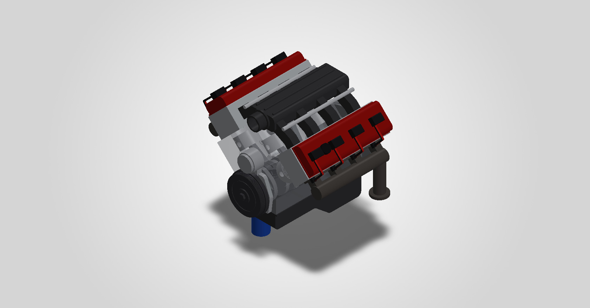
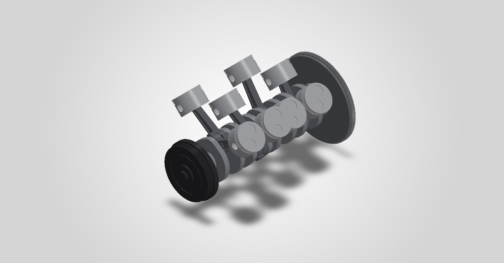
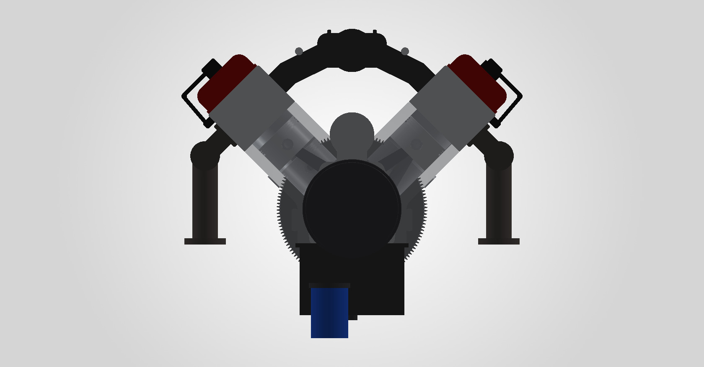
A rule-based price-action strategy I wrote in Pine Script on TradingView, then tuned with 11,142 backtests on four currency pairs (15-minute charts, 30 Nov 2025 to 25 Sep 2026, $100K test account). The original settings lost money on every pair. The tuned versions are profitable on all four, trading both long and short.
Settings combinations run in the TradingView Strategy Tester
Up from 0 / 4 with the original settings
Gross profit ÷ gross loss for the tuned scripts
At 75% of equity per trade, the largest size with no margin calls
Lost money on all four pairs, from −$31 (GBPJPY) to −$280 (GBPUSD).
Move each setting on its own away from the baseline to find which ones matter.
Improve one setting at a time until nothing helps, restarting from 12 different starts to avoid local optima.
Test every combination of the settings that interact most (wick tolerance × stop × reward:risk) around the winners.
Keep only settings with ≥ 100 trades and no worse a drawdown than the original, then test size and leverage.
Ranges tested: trend mode (all 4) · pivot 1–5 · EMA 50–300 · validity 3–20 · pending 1–5 · wick tolerance 0–10 ticks · swing-stop buffer 0–20 ticks, with or without the wick · NO-range stop 0.5–6× · reward:risk 0.5–3 · direction · position size 5–100% · leverage 10×, 20×, 50×.
Everything below is at 10% of equity per trade unless it says otherwise, so the settings compare directly.
The pair script's defaults next to the original. A dot marks each setting the tuning changed.
Net profit when one setting is changed and the rest stay at the tuned values. The coloured bar is the chosen value; faded bars break a guardrail.
The same four scripts with bigger positions. 75% of equity per trade is the largest size with no margin calls on any pair.
$100K account. At 100% every pair hits hundreds of margin calls, and the results collapse.
I documented my Leaving Cert preparation on TikTok as @lil_indian_boi, reaching thousands of students and motivating them to reach their own academic goals. That led to becoming a brand ambassador for SimpleStudy, promoting its study resources to students.
My three most-viewed videos, with over 31,000 views between them.
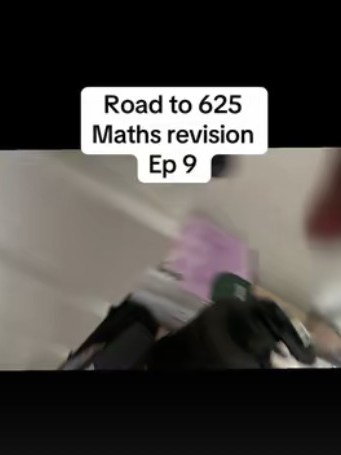
13.7K viewsRoad to 625: Maths revision, Ep 9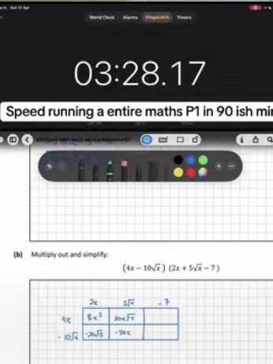
9,017 viewsSpeed-running a whole Maths Paper 1 in about 90 minutes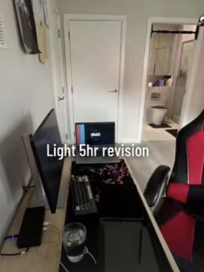
8,784 viewsLight 5-hour revisionMy study videos led to a place on SimpleStudy’s Ambassador Program, promoting its study resources to other students.
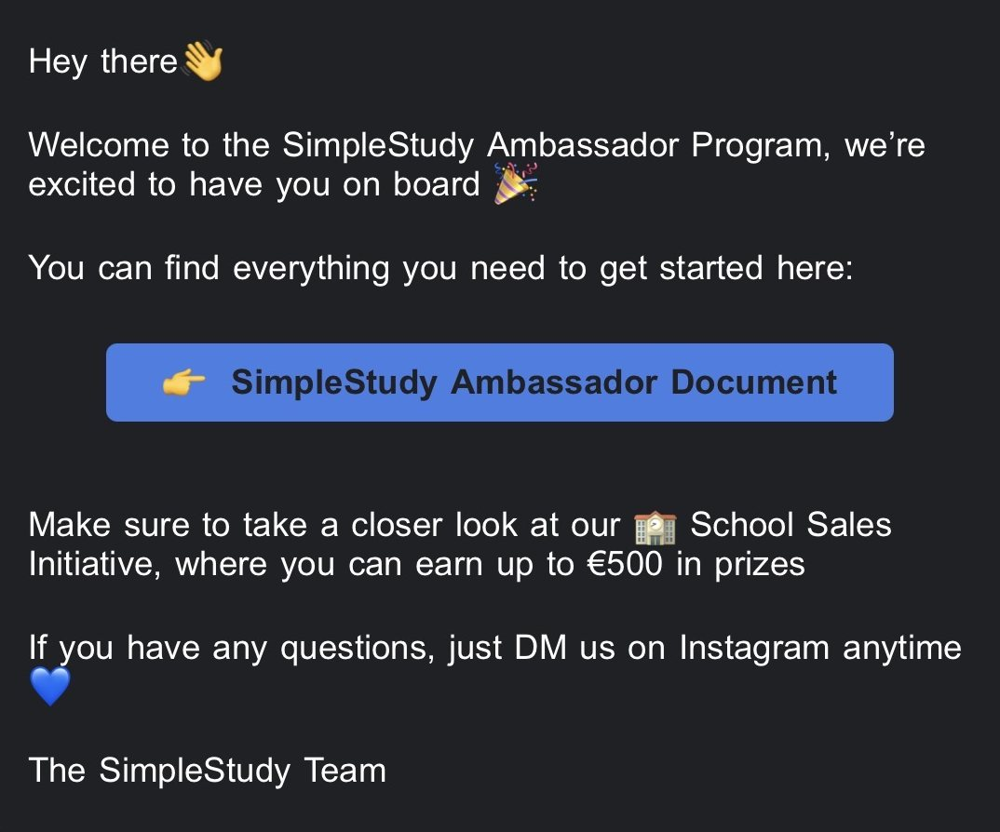
In June 2025 I volunteered at The Bike Hub in Dún Laoghaire, building and repairing around ten bikes from scratch under an experienced mechanic. Every one was donated to people in need through the local council. Separately, I designed an e-bike conversion kit in SolidWorks.
To put it simply, I was sick of my friends beating me at pool, so I set out to build a program that would give me an edge.
The more I looked, the more patterns I saw: the same shots kept coming up again and again. Once I’d done the maths, it all made sense.
Hence Ghost Ball: a program that just shows you the shot, instead of boring you with the details.
Take one photo of the table from above. Ghost Ball finds the table, flattens the perspective and picks out every ball, including the white. It works out every pot on the table, straight, off a cushion, or through another ball, ranks them by the chance you’d make them at your level, and draws the best one: where to aim, where to strike the white, and where the white goes next. It all runs in the browser on your phone; the photo never leaves it.
Fifteen balls. Six pockets. So which shot is actually on?
This is Ghost Ball. Take one photo from above. It finds the table, flattens the perspective, and picks out every ball. Missed something? Fix the corners, add a ball, or tap the white yourself.
Then the maths takes over. It finds the ghost ball: exactly where the white must be at contact. It measures how much room the pocket gives, and turns your aim error into a real pot chance. Fifty-nine percent for a beginner. Ninety-nine if you’re strong.
Straight pots. Banks. Kicks. Combinations. Every shot on the table, ranked best first. Plus where to strike the white, and where it goes next.
Ghost Ball. Know your shot before you take it.
From above, with all four corner pockets in frame
Straight, bank, kick and combination pots
Every pot it found on the demo table, ranked by chance
The vision and the maths run in the browser
This is Ghost Ball itself. It opens on a sample table with the best shot already drawn, so you can start straight away.
At a real table, open it on your phone and use Take photo. Your photo never leaves your device.
My friends kept beating me at pool, and I wanted an edge.
The more I played, the more the same shots came round again: the same cuts, the same angles into the same pockets.
Working through the geometry, it all made sense. Every pot comes down to one spot the white has to reach: the ghost ball.
I settled on the simplest version that could work: one photo from straight above in, the best shot drawn on it out. No camera rig, no projector.
Find the table, flatten it, find the balls, solve the pots, draw the answer. I tested it on tables the app draws itself, where it knows where every ball really is, so every miss shows up.
On a phone, the first version looked like a desktop page and choosing a photo did nothing. I rebuilt it phone-first: a camera bar at the bottom, a close-up of the contact, and corners you can drag under a magnifier.
Banks, kicks and combinations, all from the same window maths, every one ranked by the chance of potting it.
The white’s path after contact, a spin guide that says where to strike it and why, and how hard to hit.
I took it to a real table, took one photo, and it found the shot.
A 90-second video and this write-up.
The 80-second video at the top of this page: tighter, with the maths on screen, replacing the first explainer.
The error spreads behind each level are my estimates. Next is logging real shots and fitting them, so the percentages are measured, not modelled.
From one photo to one shot in eight steps. Each step fixes one problem and runs straight into the next. The photos are the app’s own working on its sample table, not mock-ups.
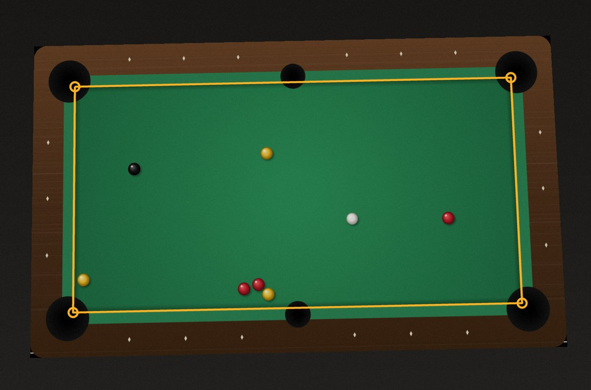
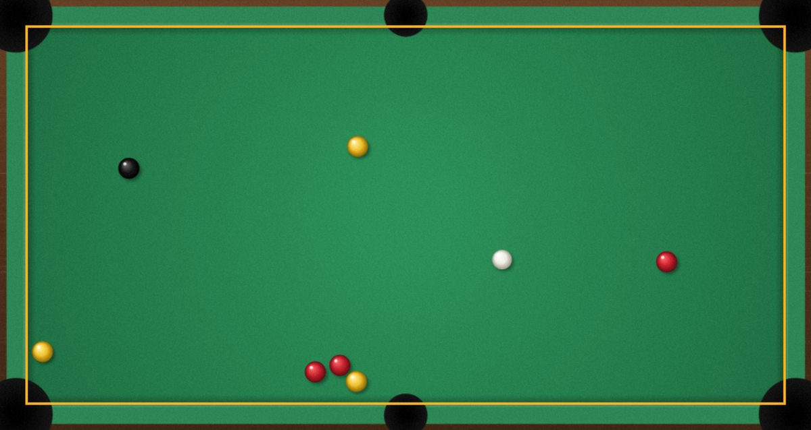
Problem
Even from above, a phone is never perfectly square to the table. The far end looks smaller, so a line drawn in photo pixels lands in the wrong place on the real table.
Fix
First find the table. The cloth is the most common strong colour in the middle of the photo, so the app keeps the biggest patch of it, fits a straight line to each side (skipping the pocket notches) and intersects the four lines. Then it steps in to the cushion nose, where the brightness changes.
Then flatten it. A homography, a 3 × 3 matrix H, maps the photo onto a flat table 1200 × 600 units long, exactly 2:1. Each corner gives two equations, so four corners give eight: exactly enough for H’s eight unknowns, solved by Gaussian elimination.
(x, y) is a pixel in the photo, (u, v) the same point on the flat tableThe table is flat and measured in real units. But where are the balls?
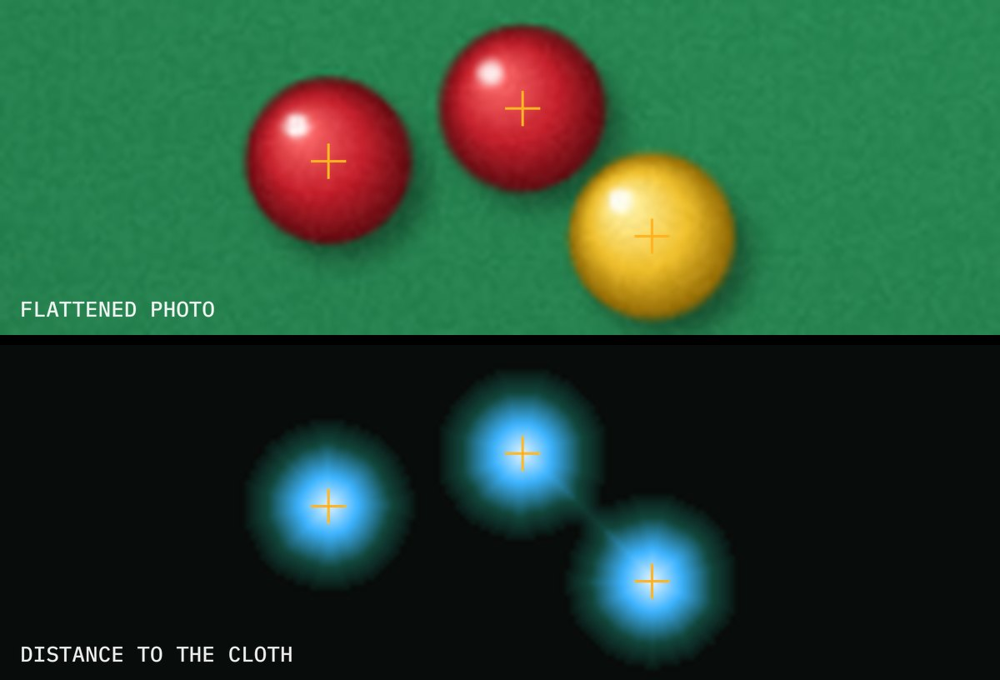
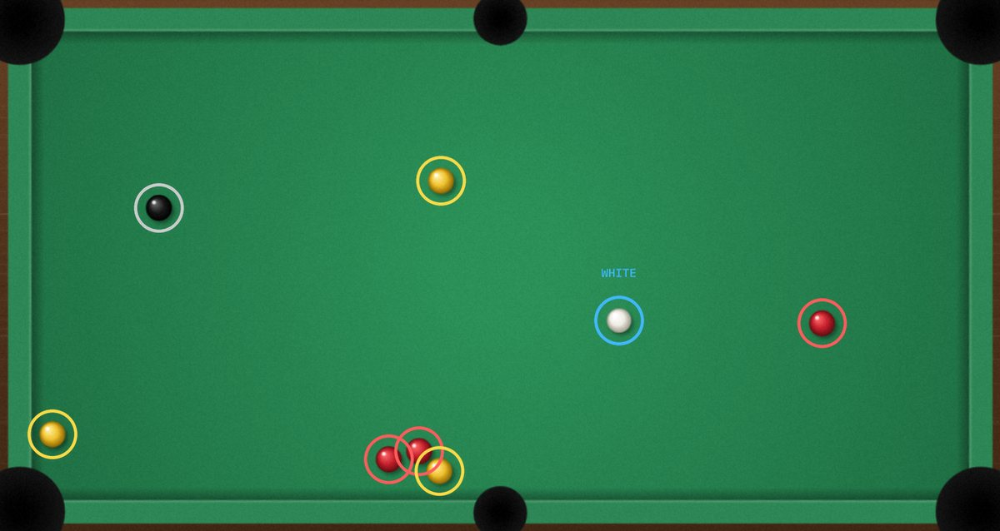
Problem
Anything on the cloth that isn’t cloth-coloured could be a ball. But balls often touch, and a cluster shows up as one blob.
Fix
A distance transform scores every non-cloth pixel by how far it is from the cloth. Each ball’s centre is a peak, so touching balls still give separate peaks.
Then each ball’s pixels are sorted into white, dark and coloured. The whitest ball is the white and the darkest is the black. Hue splits the rest into reds and yellows, or solids and stripes on a US table.
Every ball has a position and a name. So where should the white go?
Problem
Send the white straight at the red and the red carries straight on, not into the pocket. The red always leaves along the line between the two centres at the moment they touch.
Fix
Work backwards from the pocket. To send the object ball O towards the pocket P, the white has to arrive touching it on the side away from the pocket. That spot is the ghost ball, G. Aim the white’s centre at G, and O sets off towards P.
rₒ and r_w are the two radii; on a UK table the white is smaller, 47.6 mm against 50.8 mmThe cut angle θ is the angle between the white’s path and the object ball’s. The app refuses anything over 80°, because those are too thin to judge.
That gives one exact line. But a pocket is wider than one line.
Problem
A pocket has width, so a whole range of directions drops. Some pots leave lots of room and some leave almost none, and one aim line can’t tell them apart.
Fix
From the object ball, the two jaws mark out an angle. The ball’s centre has to stay one radius clear of each jaw, which trims a little off each side. Every direction left in between drops: that’s the pocket window.
αᵢ is the direction from the ball to jaw i, and dᵢ its distanceThe solver then works that window back through the collision. By bisection, it finds the range of directions for the white that send the object ball inside it, and aims at the middle.
Now the solver knows how much room each pot has. But nobody hits the exact line.
| Level | Aim spread | Cut error at 90° | Cushion spread |
|---|---|---|---|
| Beginner | 0.20° | 2.0° | 2.5° |
| Club | 0.10° | 1.2° | 1.6° |
| Strong | 0.05° | 0.7° | 1.0° |
The error spreads (standard deviations) behind each level.
Problem
Real players miss by fractions of a degree, and the collision magnifies it: a small change in the white’s angle β becomes a bigger change in the object ball’s angle φ, worst on thin cuts. A wide window can still be a bad bet.
Fix
Model the white’s direction as a normal distribution around the aim, with a spread that depends on your level. The app measures the magnification, ∂φ/∂β, numerically, and adds an error for throw and misjudged angles that grows with the sine of the cut.
Φ is the normal distribution’s cumulative function: P is the share of shots that land inside the windowThat P is the pot chance on the shot card, and every pot is ranked by it.
function potDirect(cue, obj, pk, g, sk) {
const C = [cue.x, cue.y], T = [obj.x, obj.y], s = g.r + g.rc;
const w = jawWindow(T, pk.jaws, g.r); // directions that drop
const h = w && hitWindow(C, T, s, w.lo, w.hi); // the white's directions that give them
if (!h) return null;
const k = h.hit(h.aim); // aim at the middle
if (k.cut > MAX_CUT) return null;
const sd = Math.hypot(sk.sigma * DEG * k.slope, throwSd(sk, k.cut));
return { type: 'direct', P: chance(k.phi, h.wlo, h.whi, sd), k };
}
// share of a normal error around phi that still lands inside [lo, hi]
const chance = (phi, lo, hi, sd) => Phi((hi - phi) / sd) - Phi((lo - phi) / sd);Every straight pot now has a chance. But sometimes there isn’t a straight pot.
Problem
The ball can be blocked, tight on a cushion, or at an angle no pocket allows. Going off a cushion bends the path, and a bent path breaks all the straight-line maths.
Fix
Don’t bend the path; unfold the table. A bounce is a reflection, so for a bank the app mirrors the pocket and its jaws across the cushion, and a straight pot at the mirror image P′ is a bank into the real pocket. For a kick it mirrors the white instead. The mirror line sits one ball radius off the cushion, where the ball’s centre is when it touches. Everything from steps 03 to 05 then works unchanged.
Cushions aren’t perfect, so each one adds its own spread to σφ, weighted by how much of the path comes after the bounce.
Cushions open up new routes. But sometimes another ball is in the way of every one.
Problem
Sometimes the ball near the pocket isn’t the one you’re aiming for, or it sits right on your line.
Fix
Use it. For a combination the window is worked back twice: first the directions ball A must leave in to pot ball B, then the white’s directions that send A that way. The errors compound through both collisions, which is why combinations usually rank below a good straight pot.
Now it can find the most likely pot. But potting the ball isn’t the end of the shot.
Problem
A pot that sends the white into a pocket afterwards, an in-off, is a foul. One that leaves it in a cluster leaves you nothing next.
Fix
At contact the white loses its speed along the line of centres and keeps the part along the tangent line, at 90° to the object ball’s path. Friction then turns its spin into roll. A solid ball has I = ⅖mr², which makes its final velocity five-sevenths of the tangent velocity plus two-sevenths of its spin.
Top bends the white forwards, about 34° off its line near a half-ball hit, which is where the “30° rule” comes from. Screw bends it back. The app follows each option to the first cushion or ball and suggests stun, unless that would go in-off or into another ball; then it picks top or screw, whichever runs clear. Pace comes from how far both balls travel, with the object ball’s share divided by cos²θ, the fraction of the white’s energy a cut passes on.
Put it all together, and one photo gives one shot.
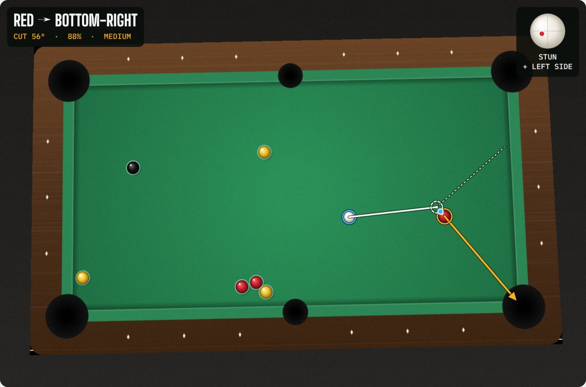
This runs the app’s own solver on a UK 7ft table: straight pots, banks (the red off a cushion) and kicks (the white off a cushion). It starts on the sample table’s best shot. Drag the white or the red, tap a pocket to aim for it, or pick a shot type. The orange wedge is the pocket window, folded at the cushion on a bank; the dashed ring is the ghost ball; the ring on the cushion is where the bounce happens; and the dotted blue line is where a stunned white goes.
Drag a ball, or focus it and use the arrow keys (Shift for bigger steps). Tap a pocket to aim for it, and tap it again to let the app choose.
Each one is the app’s own drawing, on a different sample table.
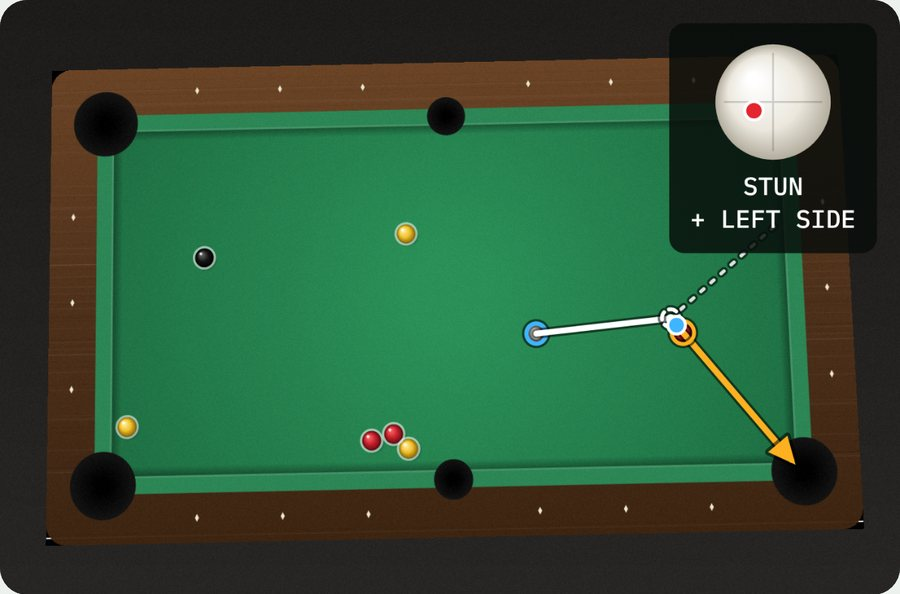
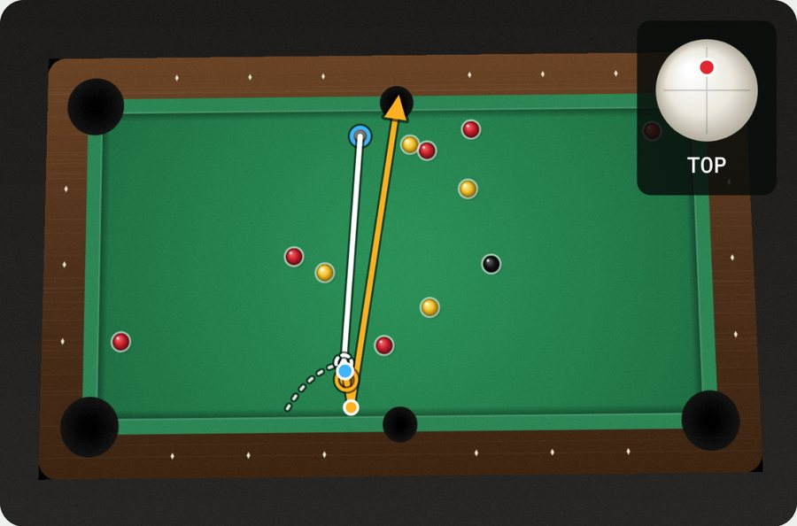
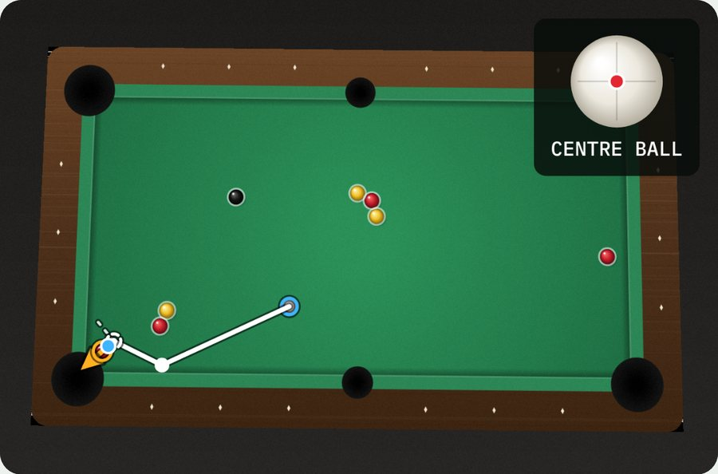
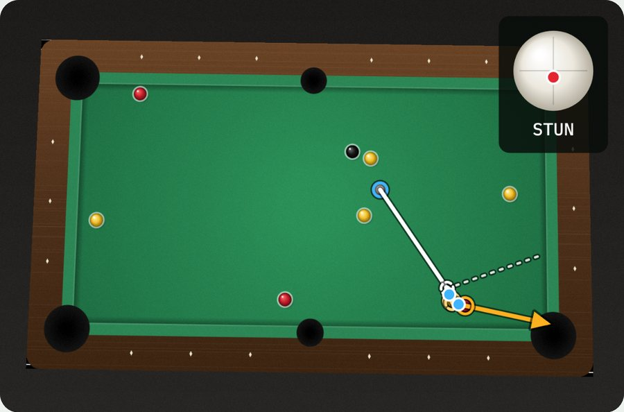
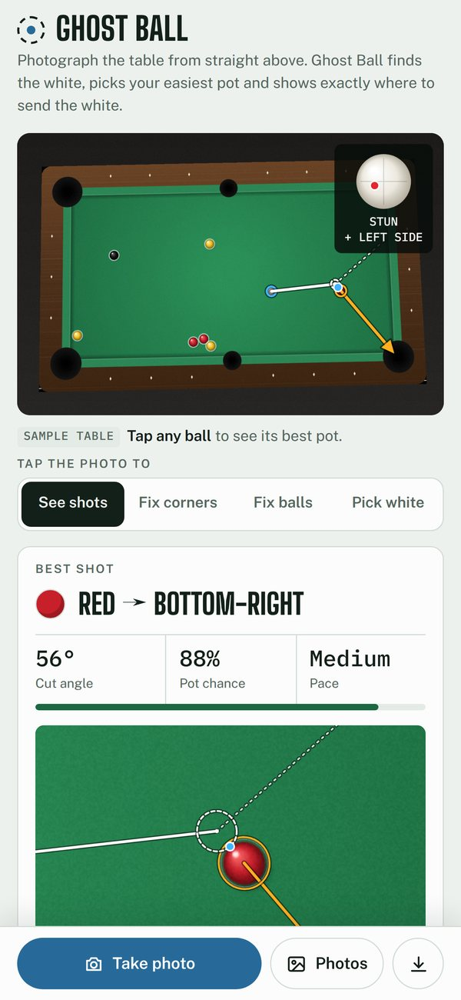
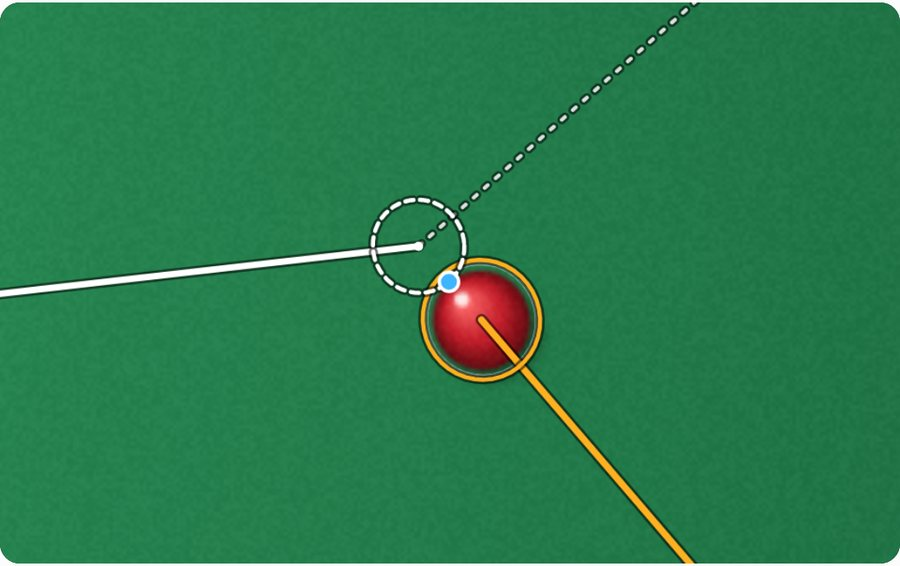
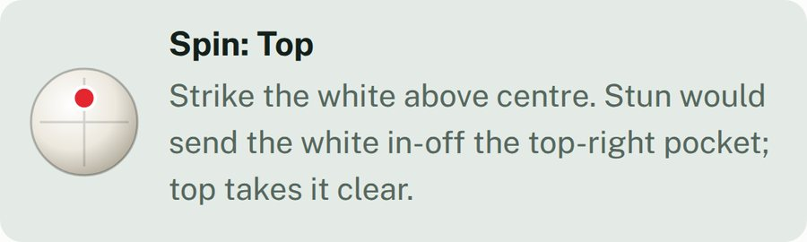
Drag to rotate · click a part · thin the fins to make them flutter
The day I got an interview for EirSpace’s structures team, I wanted to walk in with something that showed how I’d actually approach their work. So I designed the part of a rocket a structures team worries about most.
A fin can for a rocket like Bell Burnell, EirSpace’s current rocket. They publish a K700 motor, four fins and a 2 km target, and I sized everything else like a typical 4-inch, K-class student rocket. I wrote the flight simulation and the structural checks in Python, went through three design iterations, then generated the SolidWorks model from the same numbers, so the CAD can’t drift from the analysis.
On an AeroTech K700W: the 2 km target, with no ballast
Flutter speed ÷ flight speed at the worst point. I required 1.5×
Calibers, from rail exit to burnout: inside the 1.5–3.0 band
The aft centering ring at full thrust. Every case clears 2.0
A 2-DOF simulation with the K700W’s certification thrust curve, the standard atmosphere and an OpenRocket-style drag build-up. Hover the chart to read any moment of the flight.
8.25 kg at lift-off, from a 6 m rail at 85°.
Every planform here was flown with the thinnest G10 sheet that keeps the flutter margin, so they’re all flight-worthy, and the trade is stability against apogee and mass. Hover a point to see its fins.
Static margin at rail exit against apogee. Dot size is the fin set’s mass.
220/80 mm chords and a 105 mm span gave 3.0 calibers at rail exit and 1,847 m. Big fins cost drag and mass, and their higher aspect ratio needed 4.8 mm sheet to stop them fluttering.
A square trailing edge leaves base drag behind it. Chamfering it took the same fins to 1,902 m with no extra mass.
200/80 mm chords and an 80 mm span: 2.19 calibers and 2,000 m, and the lower aspect ratio let the fins drop to 4.0 mm, saving 266 g.
Flutter is a bending–torsion oscillation that feeds on the airflow and can strip fins in a few cycles. I checked it at every point of the flight with NACA TN 4197, using the local air pressure and speed of sound. The flutter lab in the model above runs the same maths.
At the worst point of the flight, just after max speed.
Each material at its lightest safe thickness, flown in the simulation.
I chose G10. Carbon and aluminium are lighter for the same margin, but G10 is cheap, easy to cut and bevel, bonds well into a glass airframe and is what student teams already use. 3.2 mm carbon is the upgrade if the last 35 m matters.
Hand calculations, each set up to be conservative. The nominal cases need a factor of safety of 2.0. The drogue-failure case, with the main parachute opening at 45 m/s (98 g), only has to survive.
Log scale. Red tick: the requirement. Dotted line: failure.
The design recovery load is 2,068 N (30 g), when the main opens at the drogue’s 25 m/s.
One set of numbers drives the analysis, the CAD, the report and this page.
Every input and assumption lives in design.py: motor, airframe, fin planform, materials and the design rules.
Standard atmosphere, Barrowman stability, a drag build-up, an RK4 flight simulation, NACA TN 4197 flutter and an axisymmetric plate solver, each checked against a known result.
The analysis writes design.txt, and a C# program drives the SOLIDWORKS API to build 8 parts and a 12-part assembly from it, check for clashes and export a STEP file.
The same results become a 7-page design report, and the model, charts and flutter lab here.
def flutter_speed(G, t, fins, pressure, sound_speed):
# flat plate, cantilevered at the root
g = fin_geometry(fins["cr"], fins["ct"], fins["s"], fins["sweep"])
ar, lam = g["ar"], g["taper"]
tc = t / fins["cr"] # thickness ratio on the root chord
denom = (39.3 * ar**3 / (tc**3 * (ar + 2))
* (lam + 1) / 2 * pressure / P0)
return sound_speed * math.sqrt((G / PSI) / denom)The flutter lab runs this over the whole trajectory every time you move its slider, so the margin it shows is the minimum over the flight, not just at max speed.
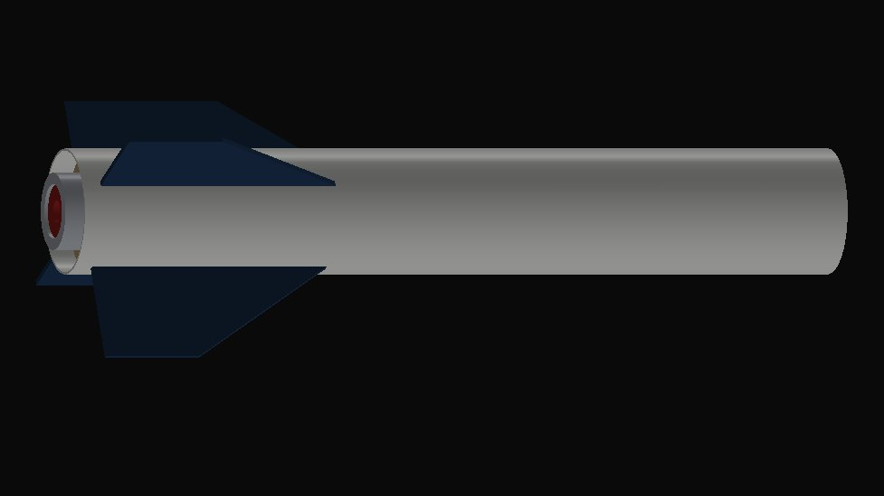
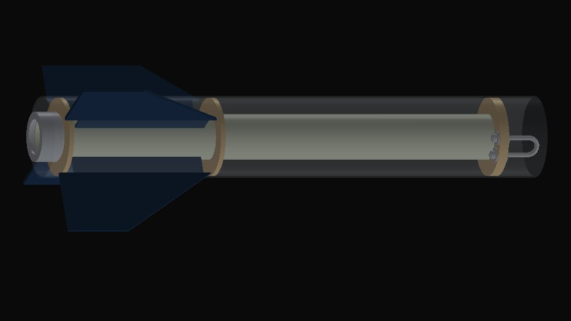
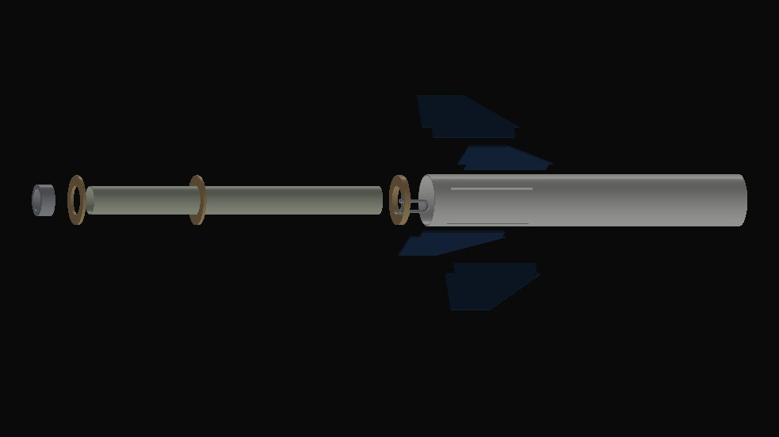
Seven pages: the assumptions, the flight, the three iterations, flutter, every load case, the CAD, and how I’d build and test it.
At a Notion hackathon, five of us built Zeto (Greek for “I seek”): one place to find biomedical and engineering placements in Ireland and track each application from prep to offer. The website is where you work, and Notion is the live database and dashboard behind it. Track a placement on the site and it lands in Notion; change it in Notion and the site picks it up.
Five students. One hackathon. Let’s fix the internship hunt.
Meet Zeto. It helps students seek, and sign, internships. Search biomedical and engineering placements across Ireland, as you type. Found one? Track it in one click. It lands straight in Notion, our live database.
Then move it along. Prep. Submitted. Interview. Offer! And Notion doubles as your dashboard. Every status, every deadline, always in sync.
We built the site in Lovable, synced it with Notion, and made this video with Claude. Zeto. From seeking, to signed.
Built together at a Notion hackathon
Sample listings across five fields, from Pfizer to Arup
Prep, Submitted, Interview, Offer
Website and Notion, every 30 seconds and whenever you come back to the tab
Placement listings, deadlines and your progress usually live on a dozen employer sites and a spreadsheet. Zeto puts them in one list and walks each application through four stages.
By name, organisation, field, location or pay, with a filter for each of the five fields. Hover a placement’s name for a short blurb about the employer.
Track adds a placement to your applications, and a row to the Applications table in Notion.
A status badge steps it from Prep to Offer, with a checklist for your CV, cover letter and references, and notes.
A status ring, your totals and the next deadline update as you go. Deadlines within 14 days turn red.
Compare offers side by side with their accept-by dates, and see every deadline on a calendar.
Internships, Applications, a Dashboard summary and a calendar view in Notion, all kept in step with the site.
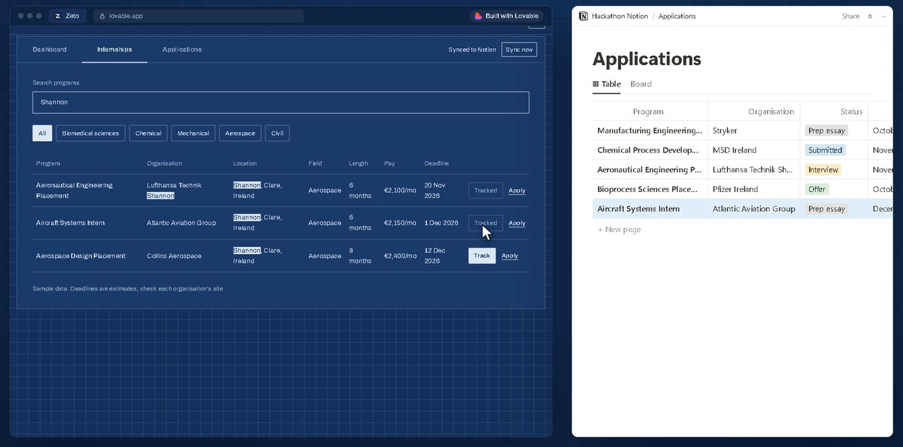
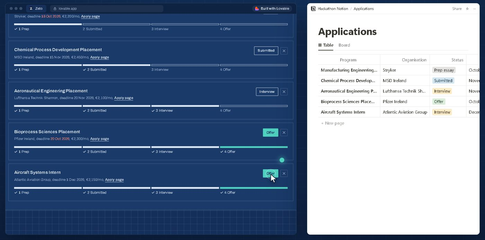
Stills from the launch video.
The site and Notion both hold the same applications, and five of us were editing both at once. Most of the work went into making them agree.
ProblemAn old tab could push its out-of-date list and undo a teammate’s changes in Notion.
FixEvery sync is pull, merge, then push, and it only pushes if something has changed since its own last push.
ProblemThe same application can change on the site and in Notion at the same time.
FixEach application remembers when it was last edited on the site, and that’s compared with the Notion row’s last-edited time. Values pulled from Notion never update it, so a change can’t echo back and forth.
ProblemA row missing from Notion could mean someone deleted it, or that it was never sent.
FixIt only counts as deleted if it was in the last push and nobody has touched it on the site since. Removing something on the site records the time, so the next pull can’t bring it back.
ProblemNotion’s search lags behind new tables, so the sync kept creating duplicates.
FixIt finds its tables as children of our hackathon page instead. Renaming one keeps the old title as a lookup key, so the table is renamed in place, not created again.
ProblemNotion allows about three requests a second for the whole connection, shared by every open tab.
FixEvery call goes through one queue and sync cycles never overlap. It polls every 30 seconds only while the tab is visible, caches table ids, and waits for Notion’s Retry-After before trying again.
ProblemWe each added views and columns in Notion as we worked.
FixThe sync only ever adds missing properties. It never removes or renames one, so nobody’s Notion setup gets wiped.
A website for doing the work, Notion for seeing it, and a video to pitch it.
React and TypeScript on TanStack Start, with separate pages for the dashboard, internships, applications, offers and a calendar.
Server functions talk to Notion’s API through Lovable’s Notion connector, so no Notion keys ever reach the browser.
The sync keeps four things up to date: the Internships and Applications tables, a Dashboard summary, and a calendar of deadlines and accept-by dates.
Our build timelapse, the app’s screens and Notion, cut to a voiceover and music for the judges.
// pull → merge → push (only if different from the last push). Never overlaps itself.
const cycle = useCallback(async () => {
if (running.current) { pending.current = true; return; }
running.current = true;
const { rows, tracked } = await runPull();
const merged = merge(ref.current, rows, tracked);
if (merged) commit(merged);
const p = payload(ref.current);
if (JSON.stringify(p) !== JSON.stringify(ref.current.lastPushed)) {
await runPush({ data: p });
commit({ ...ref.current, lastPushed: p, lastPushAt: Date.now() });
}
running.current = false;
if (pending.current) { pending.current = false; void cycle(); }
}, []);Shortened from our code (status messages and error handling removed). A cycle runs on load, after each edit, every 30 seconds while the tab is visible, and when you come back to the tab.
From our shared roadmap: Ryan built the calendar page, its Notion calendar and the site’s animations, Nihal designed the navy colour palette, and I added the demo page and made the launch video.